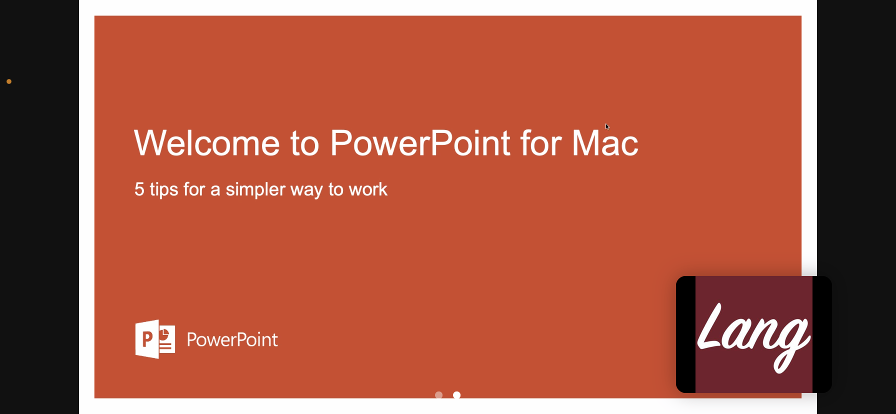

PowerPointはSlide Show (システム言語によって異なる) メニューに切り替え、Presenter Viewをクリックします、発表者モードに入ります

Zommで画面共有の時Basicじゃなく、Advanced を選択し、Portion of Screenを選択します、共有をクリックします
画面上に枠が表示されます、PowerPoint発表者モードの現在スライドのエリアに合わせて、枠を調節します
枠が黄色の時は視聴者に映しません
Zoomの主メニューが邪魔になる場合は、閉じても大丈夫です

Zoom視聴者から見た画面

視聴者は全画面しか見えず、発表効果を保ちながら、自分の参照内容にも見えます！完成！Ha! Ha! Ha!